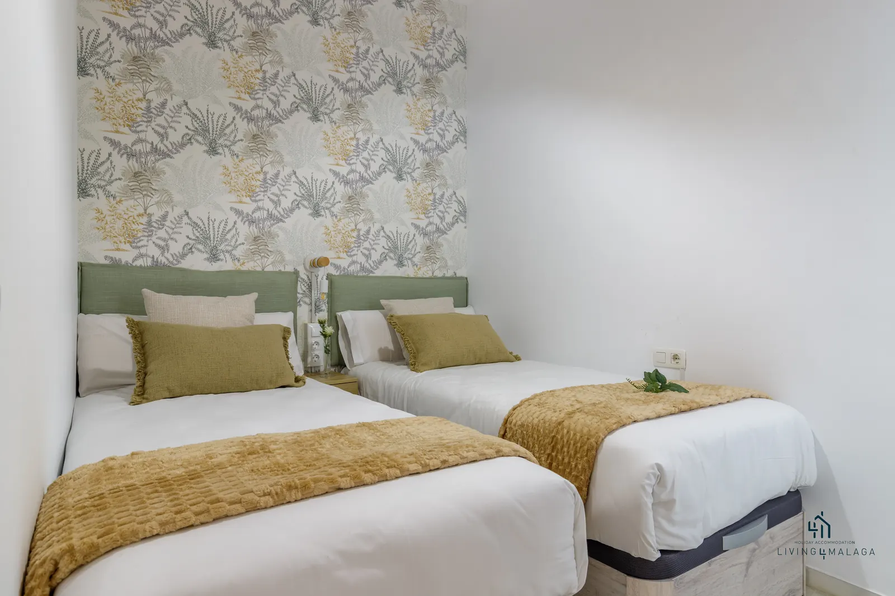

Apartamentos en Hoyo de Esparteros 9, en el centro histórico
La Feria de Málaga se celebra en agosto y, según su ordenanza, incluye el 19, que en 2027 es festivo local. En 2026 fue del 15 al 22 de agosto, y su parte de día, la Feria del Centro, ocupó Calle Larios y las plazas del centro histórico de 12:00 a 18:00. Calle Larios está a 6 minutos a pie de Urban Chic Apartments, en Calle Hoyo de Esparteros 9. Las fechas de 2027 aún no están aprobadas.
Elige apartamento y reserva en la web oficial, living4malaga.com.
Revisado el
La Feria del Centro, a pie
En 2026 la Feria del Centro fue de 12:00 a 18:00 en todas sus calles y plazas; a esa hora terminó la música en la calle. Minutos a pie desde Hoyo de Esparteros 9:
2 min
Mercado de Atarazanas
El mercado de abastos del centro, justo al lado del edificio.
6 min
Calle Larios
En 2026, una portada de 16,30 m de altura, un escenario de folclore malagueño y pandas de verdiales.
9 min
Plaza de la Constitución
En 2026, actuaciones todos los días de 13:00 a 18:00.
9 min
Catedral
Junto a ella, la Plaza del Obispo tuvo animación musical de 15:00 a 18:00 en 2026.
La feria de noche está en el recinto de Cortijo de Torres. En 2026 las casetas abrían a partir de las 14:00 y cerraban entre las 02:00 y las 06:00 (hasta las 07:00 en festivos y vísperas, y siempre a las 07:00 en la zona de la juventud). El último cierre fue a las 07:00 del 23 de agosto. La ordenanza está en revisión: el proyecto de junio de 2026 propone el cierre máximo de todas las casetas a las 06:00.
Autobús F
En 2026 la línea F de la EMT salía del lateral norte de la Alameda, entre Calle Larios y Puerta del Mar, y llevaba al Real las 24 horas por 2 €, en efectivo o con tarjeta.
Tren
La estación Málaga-Centro Alameda está a 6 minutos a pie. En la Feria de 2026 Renfe puso trenes de la C1 cada 20 minutos por la noche, del 15 al 22 de agosto, con salidas especiales desde Centro Alameda entre las 21:30 y las 00:10. La prensa citó Victoria Kent como la estación más cercana al recinto.
Taxi
En 2026 el Real tuvo dos paradas de taxi abiertas las 24 horas, y en el centro se mantuvieron, entre otras, las de Atarazanas y Puerta del Mar.
El Ayuntamiento recomienda reducir al máximo el uso del coche durante la Feria. En 2026 no se pudo entrar en coche al interior del centro histórico de 12:00 a 18:00, salvo emergencias, y la vuelta a la normalidad estaba prevista hacia las 21:00.
Aparcamiento
Los aparcamientos públicos de Camas y Avenida de Andalucía están a 4 minutos andando. En la Feria de 2026 los aparcamientos municipales del centro, estos dos incluidos, abrieron las 24 horas.
Fuegos artificiales
En 2026, la noche del viernes 14 de agosto, víspera de la Feria, hubo un espectáculo de drones en el puerto a las 23:50 y el piromusical a las 00:00, en la carretera de acceso a la terminal de cruceros.
Con niños
En 2026 la Feria Mágica, con talleres, teatro y títeres, estuvo en la Plaza de la Merced del 16 al 22 de agosto.
Calor
La Feria es en pleno agosto. En 2026 coincidió con el protocolo andaluz de altas temperaturas. Todos los apartamentos tienen aire acondicionado, y en 2026 hubo un punto sanitario en la Plaza de la Marina de 14:00 a 21:00.
Los apartamentos, en fotos
Urban Penthouse Terrace: Terraza privada con sofá de exterior y césped artificialUrban Penthouse Terrace: La terraza bajo el toldoUrban Chic 3B: La plaza de Hoyo de Esparteros desde el balcón

Urban Chic 3B: Dormitorio con dos camas individualesUrban Chic 2A: Dormitorio con cabecero tapizado y pared de listonesUrban Chic 2A: Sofá, mesa baja y balcón
Antes de reservar
Fechas. Las fechas de la Feria de 2027 aún no están aprobadas. Las fija cada año el Ayuntamiento; el 19 de agosto de 2027 ya es festivo local y el 16, festivo en Andalucía.
Ruido. El edificio está en pleno centro histórico, frente a la plaza: el ambiente de la calle puede oírse dentro de los apartamentos y en la terraza del ático.
Ascensor. El edificio tiene ascensor. El ático está en la cuarta y última planta.
Pago
Al reservar se abona el 30 %. Cuatro días antes de la llegada recibirás un correo para completar el pago total de la reserva.
Entrada
Con cerradura electrónica, a partir de las 16:00. No se puede entrar antes. Salida hasta las 12:00.
Ropa de cama y limpieza
Siempre hay sábanas limpias y un juego de toallas por persona; si quieres más toallas, puedes pedirlas con cargo adicional. Hasta 7 noches no se incluye limpieza ni cambio de toallas y sábanas. De 8 a 12 noches dejamos ropa de cama y toallas de repuesto para que las cambies. A partir de 13 noches pasamos una vez por semana a cambiarlas.
Fianza
300 € para posibles imprevistos causados por los huéspedes durante la estancia.
Cancelación
Con las tarifas flexibles puedes cancelar gratis hasta 5 días antes de la llegada; si cancelas después, no se devuelve el 30 % pagado al reservar. Las tarifas no reembolsables no admiten cambios de fecha, y si se cancelan se cobra el 100 % de la estancia. En estancias de más de un mes, hay que cancelar con un mes de antelación. Verás la política exacta antes de confirmar la reserva.
Las fechas de 2027 aún no están aprobadas. Según la ordenanza, se celebra en agosto e incluye el 19, aniversario de la incorporación de Málaga a la Corona de Castilla y festivo local en 2027. En 2026 fue del 15 al 22 de agosto.
¿Dónde es la Feria del Centro?
En Calle Larios, la Plaza de la Constitución y otras plazas del centro histórico; en 2026, de 12:00 a 18:00. Calle Larios está a 6 minutos a pie de Hoyo de Esparteros 9.
¿Cómo se llega al Real de Cortijo de Torres?
En 2026 la línea F de la EMT salió del lateral norte de la Alameda, entre Calle Larios y Puerta del Mar, y funcionó las 24 horas por 2 €. También hubo trenes de Cercanías reforzados desde Centro Alameda, a 6 minutos a pie, y taxis.
¿Hay música por la noche en el centro?
En 2026 la música en la calle de la Feria del Centro terminó a las 18:00; después solo se permitía dentro de locales con licencia. La fiesta de noche está en el Real.
¿Qué apartamento es mejor para un grupo?
Para seis: Urban Penthouse Terrace, con tres dormitorios, dos baños y terraza privada, o Urban Chic 3B, con dos dormitorios y dos baños. El edificio tiene ascensor.
¿Es más barato reservar en la web oficial?
La tarifa de la web oficial no lleva comisiones de intermediarios; la diferencia con otras plataformas cambia según la fecha.
Reserva tu Feria en el centro
Reserva en la web oficial, sin comisiones de intermediarios. Consulta las fechas libres: